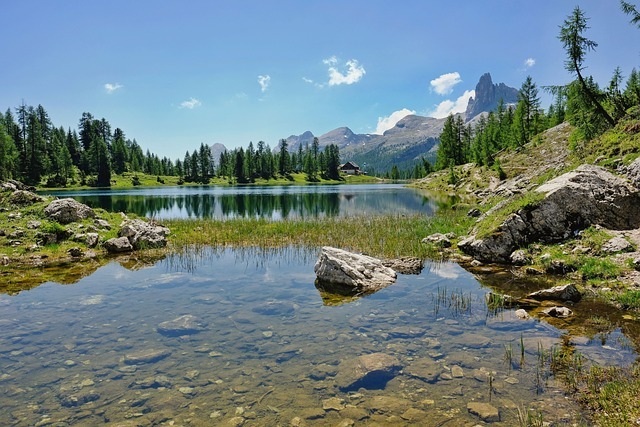

INTRODUCCION
A continuación veremos distintos animales, sus hábitats, alimentación y características básicas que poseen. esto con el fin de poder decidir en un futuro inmediato un ganador con respecto a diferentes datos recabados, caracteristicas o habilidades que considero importantes en un animal.
"El que nos encontremos tan a gusto en plena naturaleza proviene de que ésta no tiene opinión sobre nosotros."(Friedrich Nietzsche) https://psicologiaymente.com/reflexiones/frases-naturaleza
Autor:La elaboracion y diseño fue llevado a cabo por J.Guerra